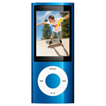
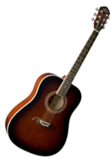
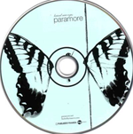
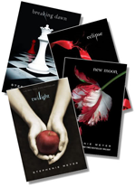
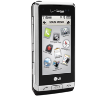
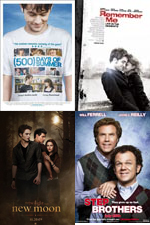
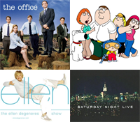
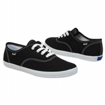
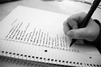

My Ipod
 So, for the majority of people who know me wouldnt be suprised that music is on my list. Music has become an important thing in my life, its what i think about the majority of the day and i dont possible think i can actually go a day without listening to my music. It changes my mood completely, whether im having a good day or bad day. With my ipod i can shoot amazing video and expecially when im at concerts, so its very handy.
My Guitar
Whenever im bored or i need a pick-me-up, my guitar is always at hand. i love singing and playing guitar the majority of the time. My Guitar is an Oscar Schmidt and its my very first one. A couple of years ago i taught myself how to play guitar and havent been able to stop since then, its one of the most enjoyable things i love to do and i dont think i'm going to stop anytime soon.
Paramore Albums
To start off, if you know me, you know i love music and you know i love Paramore. This band and their albums inspire me everyday to do things i wouldnt and Hayley Williams(lead singer) is what i want to grow up to be as a singer. Paramore's albums have so much that i can relate to and the songs are some of their best on this album(Brand New Eyes). I've seen Paramore live before and it was one of the most unforgettable moments i've had. I think putting this in the time capsule would be a good idea and it would be cool to see what i'll think in 10 years about this.
The Twilight Saga books
Just like every other girl in this world, im really like the Twilight books. Although im not obsessed to an extent that i live, breathe, and sleep Twlight, i do love the movies too, the cast and especially the books. Once you start reading these books, you just cant put them down. Soon you'll find yourself only reading, not doing any homework and not getting anything done because these books just infatuate you till the very end. I put this in the time capsule because ten years later i think it would be very interesting to see what books i and every other girl in the world were reading.
My Phone
A big reason i put this in the time capsule is because i would love to see how technology has changed over time. I use my phone multiple times a day and its really a thing to have right now if anyone needs to contact you. I love my phone because it a touch screen and very easy and small to use and carry around. It has a 3.2 megapixel camera which i love and the internet is very fast and handy. I cant go anywhere without my cell phone.
Barack Obama
I am very proud to say i lived through the first African American President, Barack Obama. I never thought i would see the day. Expecially my mother who cried when he won. I've lived through a big part of history and i'm grateful. I've been waiting for someone to make change for this country and i know he is trying to get America back in good terms. I hope he is reelected next term and i know good things are going to come these next few years.
Favorite Movies
I am a big movie lover. I've seen so many movies its nuts. I've seen all sorts of weirds ones, funny ones, scary ones, daramtic ones and all inbetweeen. But at the moment that ones that really touched me in some way, shape or form would be these four movies-
-(500)Days of Summer
-Remember Me
-New Moon
-Step Brothers
Now i have ALOT more movies i love but i wanted to cut down the list. These movies i could watch over and over again. These movies grasped my attention the moment i started watching, their amazing and very entertaining to watch.
Favorite Tv Shows
There are alot of tv shows out there but the ones that really catch my attention are these four
-The Office
-Family Guy
-The Ellen Degeneres Show
-Saturday Night Live
All these shows are very funny to me and i love to sit and laugh and enjoy myself when im at home or at a friends house. Right after school i check to see if these shows are on. I dont think i will stop watching theses shows anytime soon.
My Keds
These shoes are crazy comfy. i wear them all the time and i have a billion pairs of them. i love the look and all the colors they have for them. These shoes seem to never wear off and you can easily match them with any outfit. You can go to the beach with them, camping or anywhere else, their great.I put theses shoes in my time capsule cause different types of shoes change all the time and it will be awesome to see what cool shoes look like in ten years.
10 Things to do before I die.
1. Get a real band together and become big!
2. Get my mom a big house
3. Have a loving husband
4. Go to Disney World
5. Have kids
6. Jump out of a plane
7. Meet my idol (Hayley Wiliams)
8. Travel the world.
9. Have some decent money
10. Go to College.